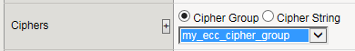
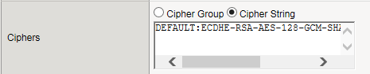

Updated Date: 09/02/2026
Managing Client-Side HTTP Traffic Using a CA-Signed Elliptic Curve DSA Certificate
When you configure the BIG-IP system to decrypt client-side HTTP requests and encrypt the server responses, you can optionally configure the BIG-IP system to use the Elliptic Curve Digital Signature Algorithm (ECDSA) as part of the BIG-IP system’s certificate key chain. The result is that the BIG-IP system performs the SSL handshake usually performed by target web servers, using an ECDSA key type in the certificate key chain.
This particular implementation uses a certificate signed by a certificate authority (CA).
To implement client-side and server-side authentication using HTTP and SSL with a CA-signed certificate, you perform a few basic configuration tasks.
You can generate a certificate that includes an Elliptic Curve Digital Signature Algorithm (ECDSA) key type, and then copy it or submit it to a trusted certificate authority for signature.
-
On the Main tab, click System > Certificate Management > Traffic Certificate Management.
The Traffic Certificate Management screen opens.
-
Click Create.
-
In the Name field, type a unique name for the SSL certificate.
-
From the Issuer list, select Certificate Authority.
-
In the Common Name field, type a name.
This is typically the name of a web site, such as www.siterequest.com.
-
In the Division field, type your department name.
-
In the Organization field, type your company name.
-
In the Locality field, type your city name.
-
In the or State or Province field, type your state or province name.
-
From the Country list, select the name of your country.
-
In the E-mail Address field, type your email address.
-
In the Lifetime field, type a number of days, or retain the default, 365.
-
In the Subject Alternative Name field, type a name.
This name is embedded in the certificate for X509 extension purposes.
By assigning this name, you can protect multiple host names with a single SSL certificate.
-
In the Challenge Password field, type a password.
-
In the Confirm Password field, re-type the password you typed in the Challenge Password field.
-
From the Key Type list, select ECDSA.
-
From the Curve list, select an elliptic curve:
|**prime256v1**|Creates a key that is 256 bits in length||secp384r1|Creates a key that is 384 bits in length| |secp521r1|Creates a key that is 521 bits in length|
Note: In general, longer keys can impact performance but are more secure. Shorter keys result in better performance but are less secure.
-
Do one of the following to download the request into a file on your system.
- In the Request Text field, copy the certificate.
- For Request File, click the button.
-
Follow the instructions on the relevant certificate authority web site for either pasting the copied request or attaching the generated request file.
-
Click Finished.
The Certificate Signing Request screen displays.
The generated certificate is submitted to a trusted certificate authority for signature.
An HTTP profile defines the way that you want the BIG-IPsystem to manage HTTP traffic.
Note: Other HTTP profile types (HTTP Compression and Web Acceleration) enable you to configure compression and cache settings, as required. Use of these profile types is optional.
-
On the Main tab, click Local Traffic > Profiles > Services > HTTP.
The HTTP profile list screen opens.
-
Click Create.
The New HTTP Profile screen opens.
-
In the Name field, type a unique name for the profile.
-
From the Parent Profile list, select http.
-
Select the Custom check box.
-
Modify the settings, as required.
-
Click Finished.
The custom HTTP profile now appears in the HTTP profile list screen.
You create a custom Client SSL profile when you want the BIG-IP system to terminate client-side SSL traffic for the purpose of decrypting client-side ingress traffic and encrypting client-side egress traffic. By terminating client-side SSL traffic, the BIG-IP system offloads these decryption/encryption functions from the destination server. When you perform this task, you can specify multiple certificate key chains, one for each key type (RSA, DSA, and ECDSA). This allows the BIG-IP system to negotiate secure client connections using different cipher suites based on the client’s preference.
-
On the Main tab, click Local Traffic > Profiles > SSL > Client.
The Client SSL profile list screen opens.
-
Click Create.
The New Client SSL Profile screen opens.
-
In the Name field, type a unique name for the profile.
-
From the Parent Profile list, select clientssl.
-
Select the Custom check box.
The settings become available for change.
-
From the Configuration list, select Advanced.
-
For the Mode setting, select the Enabled check box.
-
For the Certificate Key Chain setting, click Add.
-
From the Certificate list, select a certificate name.
This is the name of a certificate that you installed on the BIG-IP system. If you have not generated a certificate request nor installed a certificate on the BIG-IP system, and the BIG-IP system is not part of a device service clustering (DSC) configuration, you can specify the name of the existing certificate named default.
Important: If the BIG-IP system is part of a DSC Sync-Failover group, always select a non-default certificate name, and ensure that this same certificate name is specified in every instance of this SSL profile in the device group. Taking these actions helps to ensure that SSL handshakes are successful after a failover event.
-
From the Key list, select the name of the key associated with the certificate specified in the previous step.
This is the name of a key that you installed on the BIG-IP system. If you have not installed a key on the BIG-IP system, and the BIG-IP system is not part of a device service clustering (DSC) configuration, you can specify the name of the existing key named default.
Important: If the BIG-IP system is part of a DSC Sync-Failover group, always select a non-default key name, and ensure that this same key name is specified in every instance of this SSL profile in the device group. Taking these actions helps to ensure that SSL handshakes are successful after a failover event.
-
From the Chain list, select the chain that you want to include in the certificate key chain.
A certificate chain can contain either a series of public key certificates in Privacy Enhanced Mail (PEM) format or a series of one or more PEM files. A certificate chain can contain certificates for Intermediate certificate Authorities (CAs).
Note: The default self-signed certificate and the default CA bundle certificate are not appropriate for use as a certificate chain.
-
For the Passphrase field, type a string that enables access to SSL certificate/key pairs that are stored on the BIG-IP system with password protection.
This setting is optional. For added security, the BIG-IP system automatically encrypts the pass phrase itself. This pass phrase encryption process is invisible to BIG-IP system administrative users.
-
Click Add.
-
-
In the Certificate Key Chain setting, click Add again, and repeat the process for all certificate key chains that you want to specify.
At a minimum, you must specify an RSA certificate key chain.
The result is that all specified key chains appear in the text box.
-
The OCSP Stapling setting allows you to select an SSL Online Certificate Status Protocol (OCSP) stapling profile which contains various OCSP stapling parameters. By default this setting is disabled. To enable OCSP stapling, select theOCSP Stapling check box.
To enable OCSP stapling, you must first create an OCSP Stapling profile. See Creating an OCSP stapling profile for detailed steps.
-
If you want to Notify Certificate Status to Virtual Server, select the check box.
Note: This setting is used to communicate SSL certificate revocation status to the virtual server. This is typically implemented in conjunction with an OCSP stapling configuration.
-
The Ciphers setting is optional. By default, the Client SSL profile uses the DEFAULT cipher string. In most cases, the DEFAULT cipher string is appropriate, but you can customize it as necessary to meet the security and performance needs of your site. Specify a cipher group or cipher string by choosing one of these options.
Note: If you specified an ECDSA certificate key chain in the Certificate Key Chain setting, you must include the cipher string
ECDHE_ECDSAin the cipher group or cipher string that you specify in the Ciphers setting. (At a minimum, you should specify a cipher group or string such asDEFAULT:ECDHE_ECDSA.) This is necessary to ensure successful cipher negotiation when the BIG-IP system is offered an ECDSA-based certificate only.Option Description Cipher Group Select an existing cipher group from the list when you want to use a system-defined or custom cipher group to define the ciphers that the BIG-IP system uses for negotiating SSL connections. Here’s an example of the Ciphers setting where we’ve selected a custom cipher group that we created earlier.

- Always append ciphers to the DEFAULT cipher string.
- Type a cipher string that includes the ECC key type, because its shorter length speeds up encryption and decryption while still offering virtually the same level of security.
- Disable ADH ciphers but also include the keyword `HIGH`. To do this, just include both `!ADH` and `:HIGH` in your cipher string.
- For AES, DES, and RC4 encryption types, make sure you specify the DHE key exchange method. DHE uses Forward Privacy, which creates a key that it throws away after each session so that the same session key never gets used twice. When you use DHE, make sure that the SSL private key isn't being shared with a monitoring system or a security device like an intrusion detection or prevention system. Also, diagnostic tools like ssldump won't work when you're using Forward Secrecy.
- Disable EXPORT ciphers by including `!EXPORT` in the cipher string.
- If you can live with removing support for the SSLv3 protocol version, do it. This protocol version is not secure. Simply include :!SSLv3 in any cipher string you type.
Here’s an example of the Ciphers setting where we have opted to manually type the cipher string DEFAULT:ECDHE-RSA-AES-128-GCM-SHA256:!ADH:!EXPORT:HIGH:

-
When enabled, the Options setting, references the Options List setting, which are industry standard SSL options and workarounds use for handling SSL processing. The default setting is All Options Disabled. By default, TLSv1.3 is disabled in this configuration.
-
The Options List setting provides selection from a set of industry standard SSL options and workarounds for handling SSL processing.
-
The Data 0-RTT setting when Enabled, specifies that you can initiate a server connection for early data so to receive the benefits of early data delivered to the server-side early. The default value is Disabled.
-
When the Proxy SSL setting is enabled, the client can directly authenticate with the server, and the server can authenticate with the client, based on the client certificate presented. In a typical setup, with the BIG-IP system in the middle, the client and server cannot communicate directly to authenticate each other. The Proxy SSL setting requires both a Client SSL profile and a Server SSL profile, and you must enable the setting in both profiles. For information about the Proxy SSL setting, refer to the following resources:
-
The Implementing Proxy SSL on a Single BIG-IP system chapter in this guide.
-
The Proxy SSL Passthrough setting allows Proxy SSL to pass traffic when the cipher suite negotiated between client and server is not supported. Disabled by default. If you enable it, you should enable this setting on the server SSL profile as well.
-
The ModSSL Methods setting enables or disables ModSSL method emulation. Disabled (cleared) by default. Enable this setting when OpenSSL methods are inadequate. For example, enable it when you want to use SSL compression over TLSv1. When you enable this setting, you can then write an iRule, using the HTTP::header insert_modssl_fields command, which inserts some of the ModSSL options as headers into HTTP requests. See ModSSL options for use with iRules section of the Additional SSL Profile Configuration Options chapter in this guide.
-
The Cache Size setting specifies the maximum number of SSL sessions allowed in the SSL session cache. The default value for Cache Size is 262144 sessions. A value of 0 disallows session caching.
-
The Cache Timeout setting specifies the number of seconds that the system allows SSL sessions to remain in the SSL session cache before removing them. The default value for Cache Timeout is 3600 seconds. The range of values configurable for Cache Timeout is between 0 and 86400 seconds inclusive.
Note: Longer cache timeout periods can increase the risk of SSL session hijacking.
-
The Alert Timeout setting specifies the duration that the system tries to close an SSL connection by transmitting an alert or initiating an unclean shutdown before resetting the connection. Select Indefinite to specify that the connection should not be reset after transmitting an alert or initiating an unclean shutdown. The BIG-IP system sends an RST once the Alert Timeout value has been reached, forcefully aborting the connection early and reducing the amount of data transferred between the peer system and the BIG-IP system. The Immediate value makes the BIG-IP system reset both client and server side flows after 1/1000 seconds.
-
The Handshake Timeout setting specifies the number of seconds that the system tries to establish an SSL connection before terminating the operation. Selecting Indefinite specifies that the system continues trying to establish a connection for an unlimited time.
-
Configure the Renegotiation setting to control if the virtual server allows midstream session renegotiation. When enabled (default), Renegotiation allows the BIG-IP system to process midstream SSL renegotiation requests. When disabled, the system either terminates the connection or ignores the request, depending on system configuration. See Additional SSL Profile Configuration Options chapter in this guide for more details.
-
The Renegotiation Period setting indicates the amount of time before the system renegotiates the SSL session after the initial connection. If you set it to Indefinite (default), the system does not renegotiate the SSL session.
-
The Renegotiation Size setting indicates the amount of application data in megabytes the system must receive from the time of initial connection before it renegotiates the SSL session. If set to Indefinite (default), the system does not renegotiate the SSL session.
-
The Renogotiate Max Record Delay setting indicates the number of SSL records allowed during the SSL renegotiation before the system terminates the connection. If set to Indefinite, the system allows an unlimited number.
-
The Secure Renegotiation setting specifies the method of secure renegotiation for SSL connections. The default value for the Client SSL profile is Require. The values for the Secure Renegotiation setting in the Client SSL profile are as follows:
-
Request: Specifies that the system requests secure renegotiation of SSL connections.
-
Require: Specifies that the system requires secure renegotiation of SSL connections. In this mode, the system permits initial SSL handshakes from clients but terminates renegotiations from clients that do not support secure renegotiation.
-
Require Strict: Specifies that the system requires strict, secure renegotiation of SSL connections. In this mode, the system denies initial SSL handshakes from clients that do not support secure renegotiation.
-
-
The Max Renegotiation setting specifies the maximum number of SSL renegotiation attempts per connection that the system can receive in one minute before renegotiating an SSL session. For example, one client with three connections may have a maximum number of SSL renegotiation attempts equal to three times the configured Max Renegotiation value. After the system receives this number of SSL renegotiation records, it closes the connection. This setting applies to client profiles only. The default value is 5.
-
The Max Aggregate Renegotiation setting specifies the maximum number of aggregated SSL renegotiation records that the system can receive before renegotiating an SSL session. After the system receives this number of aggregated SSL renegotiation records, it closes the connection. This setting applies to client profiles only. The default value is Indefinite.
-
The Server Name setting specifies the fully qualified DNS hostname of the server, or a wildcard string containing the asterisk (*) character to match multiple names, used in the TLS SNI connection. There is no default value for this setting. For information about configuring the TLS SNI feature on the BIG-IP system, see K13452: Configuring a virtual server to serve multiple HTTPS sites using TLS Server Name Indication feature.
-
When enabled, the Default SSL Profile for SNI setting indicates that the system should use the profile as the default SSL profile when there is no match to the server name or when the client does not support TLS SNI extension. This setting is disabled by default. For information about configuring the TLS SNI feature on the BIG-IP system, see K13452: Configuring a virtual server to serve multiple HTTPS sites using TLS Server Name Indication feature.
-
When enabled, the Require Peer SNI Support setting requires that the client support the TLS SNI extension; otherwise, the BIG-IP system disconnects the client connection with a fatal alert. This setting is disabled by default.
-
The Unclean Shutdown setting allows the BIG-IP system to perform an unclean shutdown of SSL connections by closing the underlying TCP connection without sending the SSL close notify alerts. By default, this setting is enabled (selected) and is useful for certain browsers that handle SSL shutdown alerts differently. For example, some versions of Internet Explorer require SSL shutdown alerts from the server while other versions do not, and the SSL profile cannot always detect this requirement. In the case where the browser expects a shutdown alert but the SSL profile has not exchanged one (the default setting), the browser displays an error message.
-
The Strict Resume setting enables or disables the resumption of SSL sessions after an unclean shutdown.
-
The BIG-IP SSL profiles support the stateless TLS session resumption mechanism as described in Internet Engineering Task Force (RFC 5077) . This mechanism allows the BIG-IP system to encapsulate the TLS session state as a ticket to the client and allows the client to subsequently resume a TLS session using the same ticket. Disabled (cleared) by default.
-
The Session Ticket Timeout setting specifies the timeout for the session ticket. The default is 0 seconds, which means the system uses the cache timeout.
-
The Session Mirroring setting enables or disables the mirroring of SSL session ID data to a high-availability peer. The default setting is Disabled, preventing the system from mirroring SSL session ID data.
-
When enabled (default), the Generic Alert setting causes the system to send all SSL alerts using a generic handshake failure message. When the setting is disabled, the system sends more specific SSL alert messages.
-
The Non SSL Connections setting enables or disables acceptance of non-SSL connections.
-
The Allow Dynamic Record Sizing setting allows a TLS performance improvement preventing buffering and delay of TLS record fragment delivery. The BIG-IP system dynamically adjusts the size of TLS records based on the state of the connection. The disabled by default.
-
The Maximum Record Size setting specifies the profile’s maximum record size. Set to enabled when you want to allow dynamic record sizing. The range is 128 - 16384. The default setting is 16384.
-
The SSL Sign Hash setting specifies the hash algorithm that the BIG-IP system uses to sign server key exchanges with the Diffie-Hellman (DHE), including Elliptic Curve (ECDHE) ciphers, and for certificate verify messages. Possible choices are SHA1, SHA256, SHA384, or Any. When you select Any, you authorize the system to choose any one of the hash algorithms. The BIG-IP system respects the client signature_algorithms extension as defined in TLS 1.2. When possible, the BIG-IP system prefers SHA256 in the handshake signature based on the content of the signature_algorithms extension. The BIG-IP system further upgrades the hash algorithm to Hash SHA384 from SHA256 when P-384 is used. The BIG-IP system attempts to avoid the use of SHA1 in a TLS handshake, except in the case when signatures are used in X.509 certificates (these signatures are created by the X.509 Certificate Authority). The only time the BIG-IP system uses the SHA1 handshake signature is when an RSA key is used and the signature_algorithms extension is missing or - signature_algorithms is present and only lists SHA1.
-
The Peer No-renegotiate Timeout setting specifies the number of seconds the system waits before resetting the connection to peer systems that do not renegotiate SSL sessions. The default is 10.
-
The Max Active Handshakes setting limits the number of concurrent SSL handshakes. When the number of active SSL handshakes reaches the specified limit, the system terminates the most recent SSL handshake. The default setting is Indefinite, which means that there is no limit.
-
For information about using the SSL Forward Proxy feature, refer to the Implementing SSL Forward Proxy on a Single BIG-IP system chapter of the SSL Administration guide.
-
In the Client Authentication section, the Client Certificate setting enables and disables client certificate authentication. The possible options for this setting are:
-
Ignore: The Ignore setting is the default setting. It disables Client Certificate Authentication. The BIG-IP system ignores any certificate presented and does not authenticate the client before establishing the SSL session.
-
Request: The Request setting enables optional Client Certificate Authentication. The BIG-IP system requests a client certificate and attempts to verify it. However, an SSL session is established regardless of whether a trusted CA presents a valid client certificate. The Request setting is often used in conjunction with iRules to provide selective access depending on the certificate presented. For example, this option is useful if you want to allow clients who present a certificate from the configured trusted CA to gain access to the application, while redirecting clients who do not provide the required certificate to a page that details the access requirements. However, if you are not using iRules to enforce a different outcome, depending on the certificate details, there is no functional benefit to using the Request setting instead of the default Ignore setting.
-
Require: The Require setting enforces Client Certificate Authentication. The BIG-IP system requests a client certificate and attempts to verify it. The system establishes an SSL session only if a trusted CA presents a valid client certificate. Use the Require setting to restrict access to only clients that present a valid certificate from a trusted CA.
-
-
The Frequency setting specifies the frequency of client authentication for an SSL session. The default value for this setting is once.
-
The Retain Certificate is enabled by default. When this setting is disabled, the client certificate is not stored in an SSL session.
-
The Certificate Chain Traversal Depth setting specifies the maximum number of certificates to be traversed in a client certificate chain. The default value is 9.
-
The Trusted Certificate Authorities setting specifies a client CA that the system trusts. The default is **None.
-
None: Specifies that no CA is trusted for client-side processing.
-
ca-bundle: Uses the ca-bundle.crt file, which contains all well-known public certificate authority (CA) certificates, for client-side processing.
-
default: Specifies that the trusted CA for client-side processing is the default certificate on the system.
-
-
The Advertised Certificate Authorities setting specifies that the CAs that the system advertises to clients is being trusted by the profile. The default is None.
-
None: Specifies that the system does not advertise any chain as being trusted.
-
ca-bundle: Uses the ca-bundle.crt file, which contains all well-known public certificate authority (CA) certificates, for client-side processing.
-
default: Specifies that the name of the certificate on the system is the default certificate name, which the system advertises as trusted.
-
-
The CRL File setting allows you to specify a CRL that the BIG-IP system should use to check revocation status of a certificate prior to authenticating a client. If you want to use a CRL, you must import it to the BIG-IP system.
-
The Allow Expired CRL File setting instructs the system to use the specified CRL file, even if it has expired. Disabled by default.
-
The Client Certificate Constrained Delegation setting enables or disables the C3D feature. Using constrained delegation prevents users from having to provide credentials twice for certain authentication actions. For more information on this setting, refer to K72668381: Overview of the SSL Client Certificate Constrained Delegation feature article.
-
The Client Fallback Certificate setting specifies the client SSL profile name of the certificate file that is used as the client certificate when the client does not send one during SSL handshake. You can click the + icon to open the create-new OCSP object screen.
-
The OCSP setting specifies the SSL client certificate constrained delegation OCSP object that the BIG-IP system’s SSL should use to connect to the OCSP responder and check the client certificate status. You can click the + icon to open the create-new SSL Certifcate screen.
-
The Unknown OCSP Response Control setting specifies the action the system takes when the OCSP object returns an unknown status. The default value is Drop, which causes the connection to be dropped. Selecting Ignore causes the connection to ignore the unknown status and continue.
-
In the Logging section, the Log Publisher setting specifies the defined Log Publisher for the system to use for logging information.
-
Click Finished.
After performing this task, you can see the custom Client SSL profile in the list of Client SSL profiles on the system.
You can create a pool of web servers to process HTTP requests.
-
On the Main tab, click Local Traffic > Pools.
The Pool List screen opens.
-
Click Create.
The New Pool screen opens.
-
In the Name field, type a unique name for the pool.
-
For the Health Monitors setting, from the Available list, select the http monitor and move the monitor to the Active list.
-
From the Load Balancing Method list, select how the system distributes traffic to members of this pool.
The default is Round Robin.
-
For the Priority Group Activation setting, specify how to handle priority groups:
- Select Disabled to disable priority groups. This is the default option.
- Select Less than, and in the Available Members field type the minimum number of members that must remain available in each priority group in order for traffic to remain confined to that group.
-
Using the New Members setting, add each resource that you want to include in the pool:
-
Type an IP address in the Address field.
-
Type 80 in the Service Port field, or select HTTP from the list.
-
(Optional) Type a priority number in the Priority field.
-
Click Add.
-
-
Click Finished.
You can specify a virtual server to be either a host virtual server or a network virtual server to manage HTTP traffic over SSL.
-
On the Main tab, click Local Traffic > Virtual Servers.
The Virtual Server List screen opens.
-
Click Create.
The New Virtual Server screen opens.
-
In the Name field, type a unique name for the virtual server.
-
For the Destination Address/Mask setting, confirm that the Host button is selected, and type the IP address in CIDR format.
The supported format is address/prefix, where the prefix length is in bits. For example, an IPv4 address/prefix is 10.0.0.1 or 10.0.0.0/24, and an IPv6 address/prefix is ffe1::0020/64 or 2001:ed8:77b5:2:10:10:100:42/64. When you use an IPv4 address without specifying a prefix, the BIG-IP system automatically uses a /32 prefix.
Note: The IP address you type must be available and not in the loopback network.
-
In the Service Port field, type 443, or select HTTPS from the list.
-
From the HTTP Profile list, select the HTTP profile that you previously created.
-
For the SSL Profile (Client) setting, from the Available list, select the name of the Client SSL profile you previously created and move the name to the Selected list.
-
In the Resources area, from the Default Pool list, select the name of the pool that you created previously.
-
Click Finished.
After performing this task, the virtual server appears in the Virtual Server List screen.
After you complete the tasks in this implementation, the BIG-IP system encrypts client-side ingress HTTP traffic using an SSL certificate key chain. The BIG-IP system also re-encrypts server responses before sending the responses back to the client.
The certificate in the certificate key chain includes an Elliptic Curve Digital Signature Algorithm (ECDSA) key and certificate.